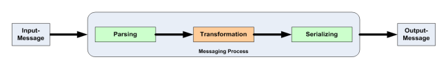

Message Processing
The following diagram describes the process of a message processing solution:

Figure: Messaging Process
A messaging process is performed with the following steps:
- Messages of a specific format enter the flow as a streaming buffer.
- These messages are parsed to a data structure.
- The messages go through some validation.
- The messages are manipulated, either enriched with additional information or
transformed to other messages of specific formats.
- The flow evolves based on some conditions evaluated on the message content and then
the messages are either distributed via applications or network,
or/and archived to a database.
To describe a message processing environment, you need to define:
- the message data structures
- the message format to be able to parse messages from and serialize them
to streaming buffers
- the processing flow
Messages in the Stardust Workflow Execution Perspective are represented as structured data.
Please refer to the chapter
Structured Data Types
for detailed information on this data type.